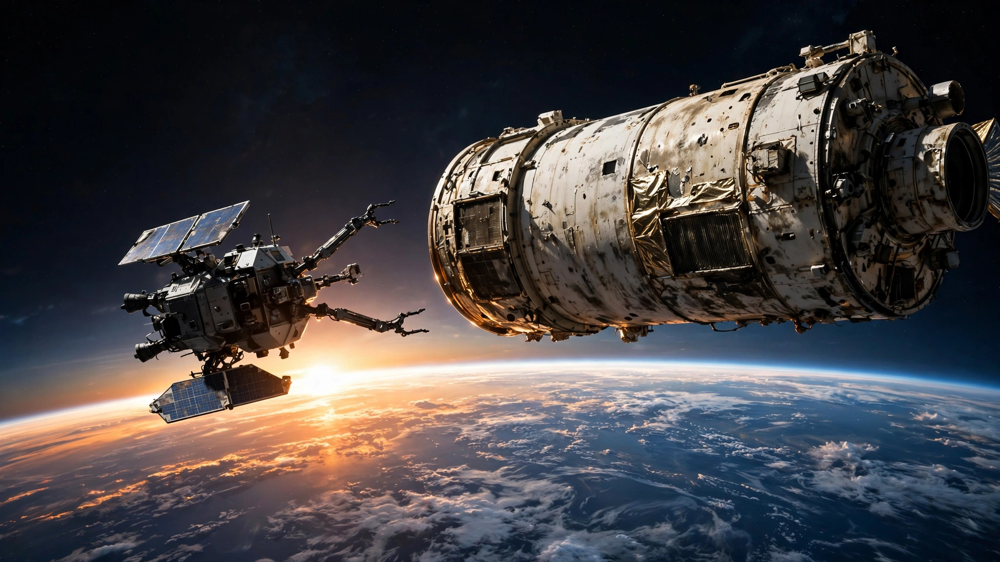

NASA Spent $2 Billion on a Robot That Never Flew. Then a Startup Did the Job for $30 Million.
The LINK spacecraft launched July 3 to rescue a telescope that was never designed to be rescued. If it works, the economics of satellite servicing will never look the same.

Thirty million dollars. That is what NASA paid a company that has never launched a spacecraft to build a robot, fly it to a $500 million telescope tumbling toward Earth, grab it by hand-holds nobody designed for grabbing, and shove it back into a safe orbit. Katalyst Space Technologies had nine months to pull this off. The rocket lifted from Kwajalein Atoll on July 3. As of this writing, the LINK spacecraft is in orbit, running checkouts, and preparing for the most audacious rendezvous in commercial space history.
The contrast writes itself. NASA's own attempt to prove satellite servicing was possible, a program called OSAM-1 (originally Restore-L), consumed $2 billion and a decade of development before it was canceled in March 2024 without ever leaving the ground. The agency's Office of Inspector General blamed the contractor, Maxar, for "poor performance." Congress had appropriated $1.5 billion. The workforce of 450 was dismantled. And exactly one year and six months later, a 30-person startup in Flagstaff, Arizona, launched the thing that was supposed to be impossible.
The math deserves to be spelled out.
The 67x Gap
OSAM-1 was designed to refuel Landsat 7, a satellite that at least had a fuel port, even if it was never meant to be accessed in orbit. The original cost estimate ran $626 million to $753 million. By cancellation, it had ballooned past $2 billion. The launch date had slipped from 2020 to "at least 2026." When NASA finally pulled the plug, it cited "a broader community evolution away from refueling unprepared spacecraft." The irony: within 18 months, the agency would contract someone else to service a far more unprepared spacecraft.
Swift has no fuel port. No docking mechanism. No grappling fixtures. The telescope was launched in 2004 with one job: detect gamma-ray bursts. Nobody imagined that 22 years later, someone would need to physically grab it. LINK's plan is to attach to ground-handling flanges on Swift's bus, the same structural points that workers held while assembling it in a clean room at Goddard. The mission team describes Swift as "unprepared but cooperative": it cannot assist with docking, but its operators can orient it to present the best grip points for inspection.
Divide the budgets: $2,000 million for OSAM-1, $30 million for LINK. That is a ratio of 66.7 to 1. One program produced hardware that sits in a warehouse at Goddard. The other produced a spacecraft currently orbiting Earth.
$3 Million per Year of Science
Swift has cost roughly $500 million across its lifetime: construction, launch aboard a Delta II rocket, and 22 years of operations, according to SpaceflightNow. That works out to $22.7 million per year of science. The telescope detects about 100 gamma-ray bursts annually and feeds data to observatories worldwide. There is no planned replacement. If Swift burns up, an entire branch of time-domain astrophysics loses its early-warning system.
LINK's $30 million price tag, spread across a projected 10-year life extension, drops the per-year cost of operating Swift to roughly $3 million. That represents an 87 percent reduction from the historical average. Put differently: LINK pays for itself if Swift operates for just 1.32 additional years. Anything beyond that is pure surplus. Science at a fraction of its original cost per discovery.
For context, a single Falcon 9 launch costs SpaceX's external customers roughly $67 million. NASA is buying a decade of gamma-ray astrophysics for less than half the price of a rocket ride.
Why Now: The Sun Is Evicting Satellites
Swift's crisis is not a fluke. It is a consequence of Solar Cycle 25, which reached its maximum in October 2024 and has remained aggressive into 2026. When the Sun is active, extreme ultraviolet radiation heats Earth's upper atmosphere, causing it to expand. That expansion increases atmospheric drag on anything in low orbit, pulling satellites downward faster than their operators planned for.
The numbers are striking. A study published in Frontiers in Astronomy tracked 523 Starlink satellite reentries between 2020 and 2024 and found that decay rates accelerate sharply once sunspot numbers exceed 67 to 75 percent of the cycle's peak. Solar Cycle 25 crossed that line and kept going. The Van Allen Probes, originally expected to orbit until 2034, saw Probe A plunge back to Earth in March 2026, years ahead of schedule. NASA attributed the early reentry directly to higher-than-anticipated atmospheric drag.
Swift's original altitude was 600 kilometers. It has eroded to roughly 400 kilometers without any propulsion to fight back. Since February 2026, mission operators have suspended most science observations and reoriented the telescope to present its thinnest profile to the direction of flight, reducing its cross-sectional area by 30 percent. That bought time. If the spacecraft drops below approximately 300 kilometers, atmospheric drag will be too strong for LINK to dock and maintain control. Modeling suggests that critical threshold arrives around October.
The Sun, in effect, is creating an involuntary market for satellite rescue services. Every asset in low Earth orbit launched without onboard propulsion is now on a countdown clock set by solar physics.
Eight Months from Contract to Launch
The timeline tells a story about how space development has changed. Katalyst Space Technologies was founded in 2020. It acquired Atomos Space in April 2025, bringing in some flight heritage. When it won the Swift contract in September 2025, CEO Ghonhee Lee's team had never launched an active payload. Environmental testing at Goddard was completed by May 4, 2026, just eight months after contract award. A comparable mission, Katalyst has said, would typically require 24 months from award to launch.
LINK weighs 425 kilograms, roughly one-third of Swift's 1,470-kilogram mass. It carries three parallel-manipulator robotic arms, each equipped with lidar sensors and three-degree-of-freedom grippers, arranged in a "split Stewart platform" configuration. The boost operation will use three Hall-effect thrusters burning xenon propellant, gimballed to align with the center of mass of the combined stack. The spacecraft will manage attitude control for a vehicle more than three times its own weight.
The mission chose the Pegasus XL, an air-launched rocket dropped from a modified L-1011 aircraft, partly because Swift's 20.6-degree orbital inclination is difficult to reach from American ground-based launch sites. The July 3 launch was the last planned flight of the Pegasus program. The vehicle that carried the last Pegasus rocket bears the name Stargazer. The mission patch carries the Latin motto Audentes fortuna iuvat: fortune favors the bold.
The Industry That Grew Around a Graveyard
LINK is not operating in a vacuum, metaphorically speaking. Northrop Grumman's SpaceLogistics subsidiary launched MEV-1 in 2020, docking with the Intelsat 901 communications satellite and successfully extending its life. MEV-2 followed. Those were geostationary satellites with known interfaces. The on-orbit servicing market reached an estimated $3.75 billion in 2026, according to The Business Research Company, with projections of $5.52 billion by 2035 at a 10.1 percent compound annual growth rate.
Commercial life extension missions currently cost between $30 million and $80 million, depending on complexity and duration. Full satellite replacement runs $250 million to $500 million. The cost saving ratio falls between 6-to-1 and 10-to-1. For operators, the economics are obvious: servicing an aging satellite is vastly cheaper than building and launching a new one. But the technical barrier has been that most satellites were never designed with servicing in mind.
That is what makes LINK's mission significant beyond Swift. If Katalyst can prove that a commercial robot can safely dock with a satellite that has no docking port, no fuel valve, and no grappling fixture, using only structural flanges that happened to be there — the addressable market for orbital servicing expands from "satellites designed for it" to "basically everything."
Limitations
The mission has not succeeded yet. LINK still needs to complete checkouts, rendezvous with Swift over three to four weeks, and execute a docking procedure that Ghonhee Lee has compared to "driving a car onto a moving tow truck at highway velocities" at orbital scale, ten times the relative distance. Multi-layer insulation on Swift's exterior may have become embrittled after 22 years in space, and there are no close-out photographs of the base where LINK needs to grab. The Hubble servicing missions discovered similar degradation.
The $30 million figure also understates Katalyst's total investment, since the company was developing servicing technology before the NASA contract. And comparing OSAM-1's total spend to LINK's contract value is not perfectly apples-to-apples: OSAM-1 was scoped as a technology demonstration with in-space manufacturing goals beyond servicing, while LINK is a focused rescue mission. The per-capability cost gap is real, but it is not literally 67x for equivalent scope.
Finally, the satellite servicing market size projections cited above come from industry research firms with interests in market growth narratives. The realized revenue may differ substantially.
The Bottom Line
A telescope that nobody designed to be serviced is being rescued by a robot that nobody thought a startup could build, on a budget that amounts to 1.5 percent of what the government spent trying and failing to prove the concept. If LINK succeeds, it will be the first commercial spacecraft to dock with an uncooperative government satellite. That category of mission did not exist two years ago.
The Sun is dragging more hardware toward destruction every day. The Van Allen Probes are already gone. Swift is next if LINK cannot reach it by October. Behind Swift, dozens of legacy science missions in low Earth orbit sit without propulsion, their orbital energy bleeding away into an atmosphere that grows thicker with every solar flare.
Here is what you can do with this information. If you work in satellite operations: the servicing market now has a proof-of-concept for grabbing satellites that were never designed for it. Plan accordingly. If you work in government procurement: $30 million and eight months bought what $2 billion and ten years could not. The lesson is not subtle. And if you are simply someone who benefits from the science that space telescopes produce, from weather data to astronomical surveys to gamma-ray burst detection, the fact that a 30-person company in Arizona may have just extended that science by a decade, for less than the cost of a mid-rise apartment building in San Francisco, is worth knowing about.